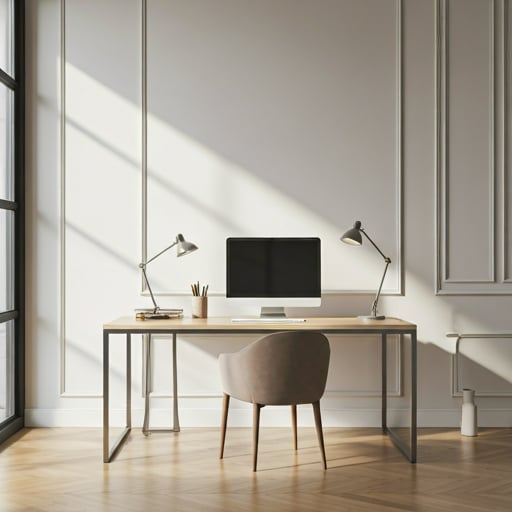
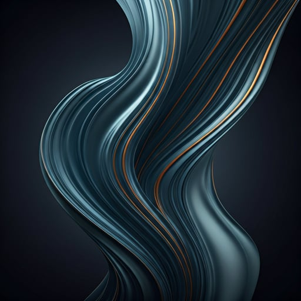
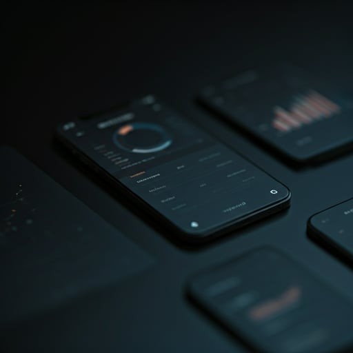

The Philosophy
Design is not just what it looks like and feels like. Design is how it works. I approach every project as a curator approaches a gallery—with reverence for the subject and an obsession with the viewer's journey.
Based in the intersection of technology and human emotion, my work seeks to eliminate the friction between complex data and intuitive experience.
45+
Projects Delivered
12
Design Awards
Case Studies

Aetheria Brand Identity

Onyx Dashboard v2
Service Matrix
Tailored creative solutions designed to elevate your digital presence from ordinary to extraordinary.
Information Architecture
Structuring complex data systems into intuitive, navigable experiences that users love.
- User Flows
- Sitemapping
- Taxonomy
Interface Design
High-fidelity visual systems that balance brand identity with modern aesthetics.
- Design Systems
- Prototypes
- Iconography
Interaction Strategy
Movement and micro-interactions that breathe life into static screens.
- Motion Design
- Usability Testing
- Web Accessibility
Ready to curate your vision?
Let's collaborate to build a digital experience that resonates and performs.